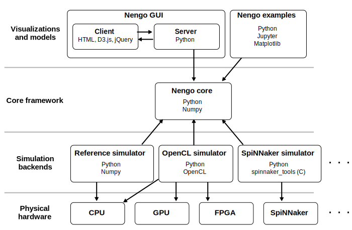

Nengo ecosystem
The Nengo ecosystem is made up of
several interacting projects.
The following image shows how these projects interact.
Each arrow indicates a dependency on another project
(e.g., the Nengo GUI depends on Nengo core).

The Nengo ecosystem is organized this way so that
visualizations and models only need to know about
the Nengo core in order to be run on many different types
of physical hardware.
Most models can be run on a CPU, GPU, FPGA,
and neuromorphic hardware.
Core framework
The core of the Nengo ecosystem is the
Python library
nengo,
which includes the five Nengo objects
(
Ensemble,
Node,
Connection,
Probe,
Network)
and a NumPy-based simulator.
Additional extensions for large-scale brain modelling with Nengo.
Includes advanced dynamics networks,
additional synapse models, and more.
Nengo extras contains extra utilities and add-ons for Nengo.
These utilities are helpful when you need them,
but they’re not necessary for using Nengo,
so we keep them separate to keep the Nengo core
as small as possible.
You’re reading the Nengo documentation right now!
It contains general information about
projects in the Nengo ecosystem
and how these projects are developed.
Nengo Enhancement Proposals (NEPs) are proposals
that touch multiple projects in the Nengo ecosystem,
or represent a large change to one important project.
Visualizations and models
Nengo GUI is a web browser-based interactive
model construction and visualization tool.
The Semantic Pointer Architecture (SPA)
uses Nengo to build large cognitive models.
An archive of Nengo examples.
We’ve found that examples are the best way
to learn about Nengo,
so we curate a large collection of examples here
for teaching purposes.
Simulation backends
Models created with the Nengo core
can be run on any backend.
Each backend is designed for a particular use case,
like a particular hardware or software platform,
allowing the same model to be run
faster or more accurately.
Nengo OpenCL uses the
OpenCL framework
to run Nengo models on GPUs and other platforms.
Most models run significantly faster with Nengo OpenCL.
Nengo DL simulates Nengo models using
the
TensorFlow library
to easily interact with deep learning networks,
as well as use deep learning training procedures
to optimize Nengo model parameters.
Nengo Loihi runs Nengo models on
Intel’s Loihi neuromorphic hardware.
Nengo Loihi also includes a software simulation
of Loihi’s spiking neuron cores so that
models can be prototyped before running on real hardware.
Nengo SpiNNaker simulates Nengo models using
SpiNNaker
architecture and associated hardware.
Models running on SpiNNaker always execute in real time.
Nengo MPI simulates Nengo models using a
C++ backend that uses
MPI
to parallelize the running of the model
on large numbers of heterogeneous processing units.


 Terry Stewart
Terry Stewart